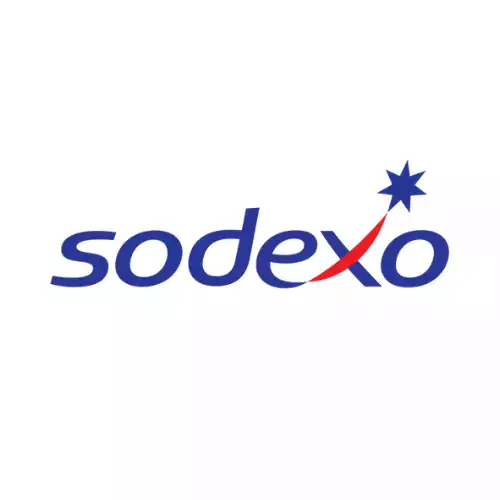
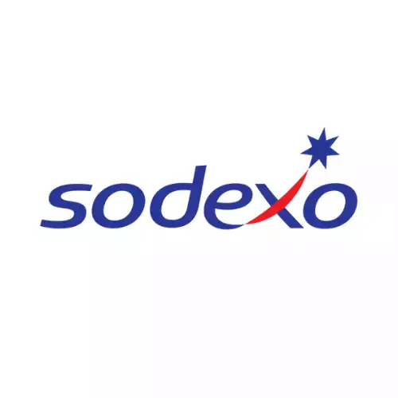

NOS SERVICES

À Eaubonne, assurez la performance de vos canalisations grâce à notre service de curage en profondeur. En nettoyant régulièrement vos conduits, vous évitez efficacement les obstructions et dysfonctionnements. Faites confiance à nos spécialistes pour maintenir votre assainissement individuel en parfait état.
CONTACTEZ - NOUS
Confiez la vidange de vos fosses septiques à nos experts à Eaubonne. Nous intervenons pour le pompage de bacs à graisse et le traitement des eaux usées, garantissant la propreté et le bon fonctionnement de vos installations d’assainissement.
CONTACTEZ - NOUS
Optimisez la gestion de vos eaux usées à Eaubonne avec notre service de pompe de relevage. Que ce soit pour un usage domestique ou industriel, nous vous proposons des équipements de haute qualité pour assurer une évacuation efficace et durable.
CONTACTEZ - NOUS
À Eaubonne, nos équipes réalisent vos travaux de Voirie et Réseaux Divers avec précision. De la création de tranchées à l'installation de réseaux d'eau potable, d'électricité ou d'assainissement, nous garantissons des prestations de qualité, conformes aux normes en vigueur.
CONTACTEZ - NOUS
Réalisez votre raccordement au réseau public d’assainissement à Eaubonne en toute sérénité. Nous nous occupons de la création de tranchées, de la pose des canalisations et du branchement au collecteur communal, pour garantir l’hygiène et la conformité de vos évacuations.
CONTACTEZ - NOUSNettoyage de canalisations à Eaubonne : Redonnez vie à vos canalisations à Eaubonne grâce à notre service de curage en profondeur. Le nettoyage régulier prévient les obstructions et les dysfonctionnements, assurant ainsi le bon fonctionnement de votre assainissement individuel. Faites confiance à nos spécialistes pour une intervention fiable et efficace.
Raccordement à l’égout à Eaubonne : Pour vos travaux de raccordement au réseau public d’assainissement à Eaubonne, faites appel à notre expertise. Assainissement 95 réalise l'intégralité des étapes : création de tranchées, pose de canalisations, raccordement au collecteur communal, dans le respect des normes en vigueur.
Vidange de fosses septiques à Eaubonne : Maintenez l'efficacité de votre assainissement avec notre service de vidange de fosses septiques à Eaubonne. Assainissement 95 intervient rapidement pour retirer les boues, prévenir les engorgements et garantir une évacuation optimale des eaux usées, dans le strict respect des normes.
Pompe de relevage à Eaubonne : Gérez efficacement vos eaux usées domestiques ou industrielles à Eaubonne grâce à nos solutions de pompes de relevage performantes. Notre équipe spécialisée assure l’installation d’équipements fiables pour garantir le bon fonctionnement de votre réseau.
VRD – Voirie et Réseaux Divers à Eaubonne : Faites appel à Assainissement 95 pour la viabilisation de vos terrains à Eaubonne. Nos équipes réalisent avec rigueur la création de tranchées, l’installation de réseaux d’eau potable, d’évacuation des eaux usées et pluviales, ainsi que les raccordements aux réseaux publics, dans le respect des normes de qualité et de sécurité.
UNE ÉQUIPE PROFESSIONNELLE ET DES ÉQUIPEMENTS MODERNES À EAUBONNE
À Eaubonne, notre expertise en assainissement repose sur une équipe de spécialistes qualifiés et des équipements de dernière génération. Nous réalisons des interventions fiables et durables : curage de canalisations, entretien et vidange de fosses septiques, installation et maintenance de pompes de relevage, ainsi que la réalisation de travaux VRD et de raccordements aux réseaux. Grâce à notre savoir-faire technique et à un matériel performant, nous garantissons un service complet et conforme aux normes pour toutes vos installations d’assainissement individuelles ou collectives.
NOS TARIFS
DES PRIX ATTRACTIFS À EAUBONNE
Nous proposons à Eaubonne des services d'assainissement de qualité à des tarifs compétitifs. Notre objectif est de vous offrir des solutions efficaces sans compromettre votre budget. Contactez-nous dès maintenant pour découvrir nos offres avantageuses et bénéficier d'un service fiable et professionnel.
DEVIS GRATUITPOURQUOI CHOISIR ASSAINISSEMENT 95 POUR VOS TRAVAUX À EAUBONNE ?
Pour vos projets d’assainissement à Eaubonne, faites confiance à Assainissement 95 : un gage de qualité, de fiabilité et de tranquillité. Forts de plusieurs années d’expérience, nous avons bâti une solide réputation grâce à notre professionnalisme et à l'implication de notre équipe. Chaque intervention – curage de canalisations, vidange de fosses septiques, traitement des eaux usées – est réalisée avec rigueur, de l'évaluation initiale à la livraison finale.
NOS CONTRATS D’ASSAINISSEMENT À EAUBONNE : SÉRÉNITÉ GARANTIE

CONTRATS PONCTUELS
CONTRATS ANNUELS
Avec nos contrats d’assainissement sur mesure à Eaubonne, vous bénéficiez d’une tranquillité totale. Chez Assainissement 95, nous vous garantissons transparence et clarté à chaque étape : planification, délais, coûts. Nos formules, adaptées à vos besoins ponctuels ou à un suivi annuel, couvrent le curage de canalisations, l'entretien de fosses septiques, l’installation de pompes de relevage, ainsi que les travaux VRD et raccordements aux réseaux. Notre engagement qualité vous assure un service fiable, clair et durable.
ABSORBEX ASSAINISSEMENT 95 : VOTRE SPÉCIALISTE DE L'ASSAINISSEMENT À EAUBONNE
Absorbex Assainissement 95, votre expert de l'assainissement à Eaubonne, répond efficacement à toutes vos urgences, pour particuliers et professionnels. Nos contrats personnalisés vous offrent une tranquillité totale, avec des prestations claires et détaillées : curage de canalisations, vidange de fosses septiques, traitement des eaux usées, débouchage, assainissement individuel et installation de micro-stations d'épuration.
Si votre propriété est raccordable au réseau public, nous acheminons vos eaux usées jusqu’au collecteur communal. En l'absence d'égout, nous mettons en place un réservoir d'eau complet avec traitement via tranchée et filtre à sable. La qualité du raccordement et du système d’épuration est au cœur de notre engagement.
Absorbex Assainissement 95 reste disponible 24h/24 et 7j/7, weekends et jours fériés inclus. En plus des interventions d'urgence, nous réalisons également le remplacement de tuyaux, la rénovation d’équipements, l’adaptation des réseaux, ainsi que le nettoyage et l’entretien des collecteurs et des stations d'épuration à Eaubonne.
NOS PARTENAIRES


 
